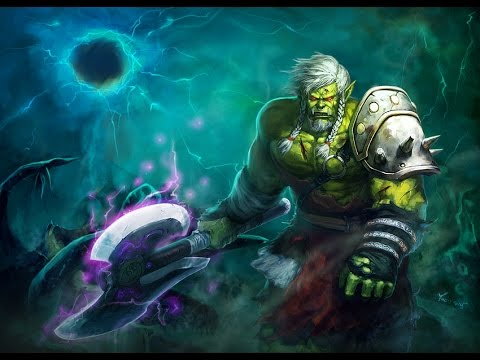
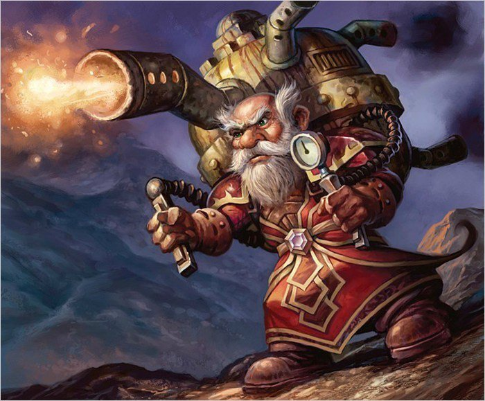

World of warcraft


Nueva Expansion
¿QUE PACTO ELEGIRAS?
BASTION
KYRIANOS:
Nobles habitantes de Bastión que guían a las almas de los difuntos hacia Oribos para que sean juzgadas por el impasible Árbitro antes de ser enviadas a sus destinos finales. Los recién llegados a Bastión se convertirán en aspirantes kyrianos, unos seres sin alas que entrenan durante eones para algún día conseguirlas y pasar a formar parte de los Ascendidos.
CURIA KYRIANA
Video sobre Bastion:
Una vez que los jugadores alcancen el nivel máximo y exploren las cuatro primeras zonas, podrán jurar lealtad a una curia, como la de los kyrianos. Cada una ofrece las facultades de sus campeones, además de otros poderes y recompensas cosméticas que se pueden desbloquear con el tiempo mediante una campaña de la curia —una historia épica exclusiva de cada facción— y otras actividades. Esta alianza también permite acceder a un sagrario de la curia, una ciudad a la que solo pueden entrar los jugadores que hayan alcanzado un acuerdo con sus gobernantes.
¿QUE PACTO ELEGIRAS?
REVENDRETH
VENTHYR:
Los vampíricos venthyr son los verdugos de los indignos y buscan rehabilitar las almas pecaminosas que les envía el Árbitro. Cuando lo logran, las almas son enviadas a otro reino para que sirvan durante toda la eternidad o pueden optar por convertirse en venthyr para continuar el ciclo como instrumentos de la contrición.
CURIA VENTHYR
Video sobre Venthyr:
Una vez que los jugadores alcancen el nivel máximo y exploren las cuatro primeras zonas, podrán jurar lealtad a una curia, como la de los venthyr. Cada una ofrece las facultades de sus campeones, además de otros poderes y recompensas cosméticas que se pueden desbloquear con el tiempo mediante una campaña de la curia, una historia épica exclusiva de cada facción. Esta alianza también permite acceder a un sagrario de la curia, una sala a la que solo pueden entrar los jugadores que hayan alcanzado un acuerdo con sus gobernantes.
¿QUE PACTO ELEGIRAS?
MALDRAXXUS
GLADIADORES:
Los guerreros y campeones más poderosos se convierten en gladiadores de la Casa de los Elegidos. Estos estrategas, inigualables en el campo de batalla, entrenan sin descanso con un amplio abanico de armas forjadas con runas hasta alcanzar una destreza marcial incomparable.
CURIA DE LOS NECROSEÑORES
Video sobre Maldraxxus:
Una vez que los jugadores alcancen el nivel máximo y exploren las cuatro primeras zonas, podrán jurar lealtad a una curia, como la de los necroseñores. Cada una ofrece las facultades de sus campeones, además de otros poderes y recompensas cosméticas que se pueden desbloquear con el tiempo mediante una campaña de la curia, una historia épica exclusiva de cada facción. Esta alianza también permite acceder a un sagrario de la curia, una sala a la que solo pueden entrar los jugadores que hayan alcanzado un acuerdo con sus gobernantes.
¿QUE PACTO ELEGIRAS?
ARDENWEALD
VORKAI:
Los feroces y osados vorkai son los protectores y guardianes de Ardenweald.Constituyen el grueso de la Cacería Salvaje de la Reina del Invierno, que protege el dominio de aquellos que busquen traer el desequilibrio. Durante la sequía de ánima, ha recaído sobre ellos la misión de promulgar y aplicar los decretos de la reina con respecto a los bosques que deben florecer y los que deben perecer.
CURIA DE LAS SÍLFIDES NOCTURNAS
Video sobre Ardenweald:
Una vez que los jugadores alcancen el nivel máximo y exploren las cuatro primeras zonas, podrán jurar lealtad a una curia, como la de las sílfides nocturnas. Cada una ofrece las facultades de sus campeones, además de otros poderes y recompensas cosméticas que se pueden desbloquear con el tiempo mediante una campaña de la curia, una historia épica exclusiva de cada facción. Esta alianza también permite acceder a un sagrario de la curia, una sala a la que solo pueden entrar los jugadores que hayan alcanzado un acuerdo con sus gobernantes.
Podras jugar con las siguientes razas
|  | |||||
orco |
no muerto |
tauren |
trol |
elfo de sangre |
goblin |
PANDAREN |
NOCHE eterna |
tauren monte alto |
ORCO MAG'HAR |
trol zandalari |
vulpera |

 |
 | ||||
Humano |
Enano |
Elfo de la noche |
Gnomo |
Draenei |
Huargen |
Pandaren |
Elfo del vacío |
Draenei fornado por la luz |
Enano hierro negro |
Kultirano |
Mecagnomo |

 |
 |
 |
|||
Guerrero |
Paladín |
Cazador |
Pícaro |
Sacerdote |
Chamán |
Mago |
Brujo |
Monje |
Druida |
Cazador de demonios |
Caballero de la muerte |
Tráiler cinematico de World of Warcraft:Shadowlands
Resumen de características de World of Warcraft:Shadowlands
Shadowlands: Tráiler oficial